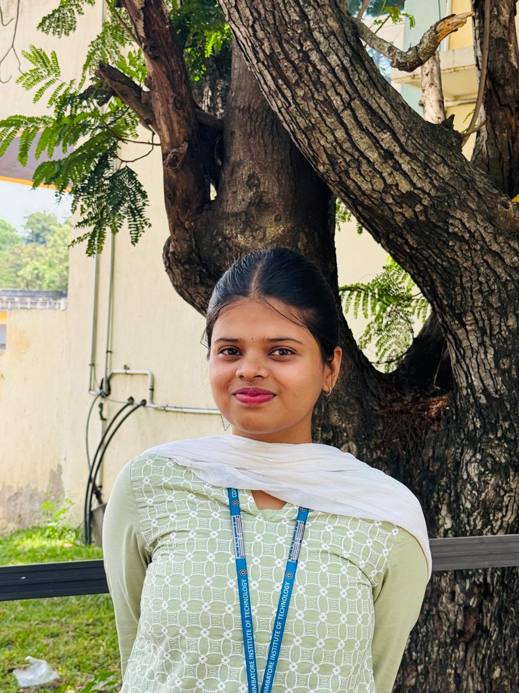

I enjoy analyzing data, building my technical skills and continuously improving through structured learning.
More About Me
Hello I am Tanushree, an enthusiastic M.Sc Data Science student who loves working with data and uncovering meaningful insights. I enjoy analyzing data, building projects and exploring practical data science solutions. I'm also part of the 403Strats club where I've gained experience as a Social Media Manager, contributing to event planning and community engagement. I have basic knowledge in multiple programming languages and web technologies and I'm continuously learning and growing through hands-on projects and collaborative experiences.
Name : Tanushree K
Email : tanushreekrishnaraj@gmail.com
Phone : +91 8072210137
Education : M.Sc Data Science, CIT (2024-2029)
Languages : English, Tamil, Hindi
Social Media Member - 403Strats club
Part of the 403Strats Club’s social media team, helping manage posts, updates, and digital communication.
Coimbatore Institute of Technology
CGPA (till 2nd semester): 7.34
Currently pursuing my Integrated MSc in Data Science, covering both foundational and advanced subjects such as machine learning, data analytics, programming, and mathematical concepts. I actively participate in hands-on projects, club activities, and continuous skill development to strengthen my technical, analytical, and problem-solving abilities.
AVB Matric Higher Secondary School
Percentage: 83%
Completed my higher secondary education with a strong academic performance, developing a solid foundation in mathematics, science, and analytical thinking. This stage strengthened my interest in technology and problem-solving, motivating me to pursue data science and programming in higher studies.
Technologies: Python, Tkinter (GUI)
A desktop application built using Python and Tkinter to provide an easy-to-use graphical interface for users. The project focuses on clean UI design, interactive components, and smooth navigation, demonstrating strong fundamentals in GUI development and Python event-driven programming.
Technologies: Java, JDBC
A Java-based application that allows users to search for recipes using ingredients. Integrated with a database using JDBC to store, retrieve, and manage recipe information. The project highlights skills in Java programming, backend database connectivity, and efficient data handling.
Technologies: HTML, CSS, JavaScript, MongoDB, Flask (Python)
A web application aimed at connecting farmers with schools by enabling easy product listing and ordering. Built with Flask for backend functionality, MongoDB for data storage, and HTML/CSS/JS for responsive user interfaces. This project showcases full-stack development skills, API handling, and real-world problem-solving.
UI/UX - Basic Knowledge
Email: tanushreekrishnaraj@gmail.com
Phone: +91 8072210137